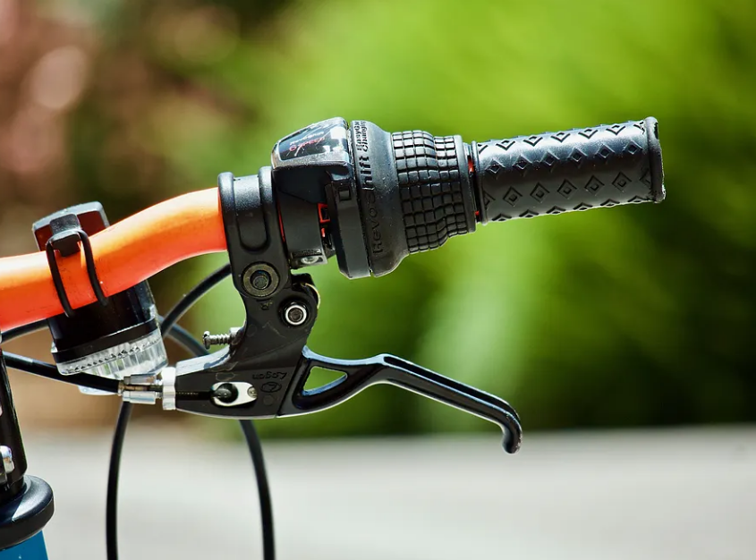
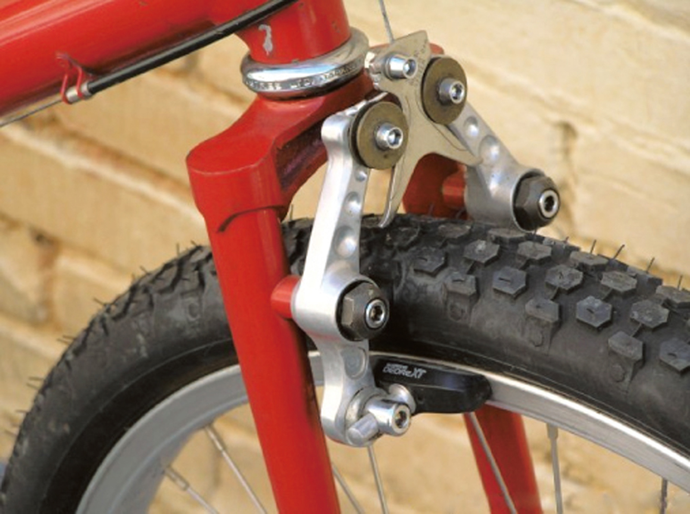
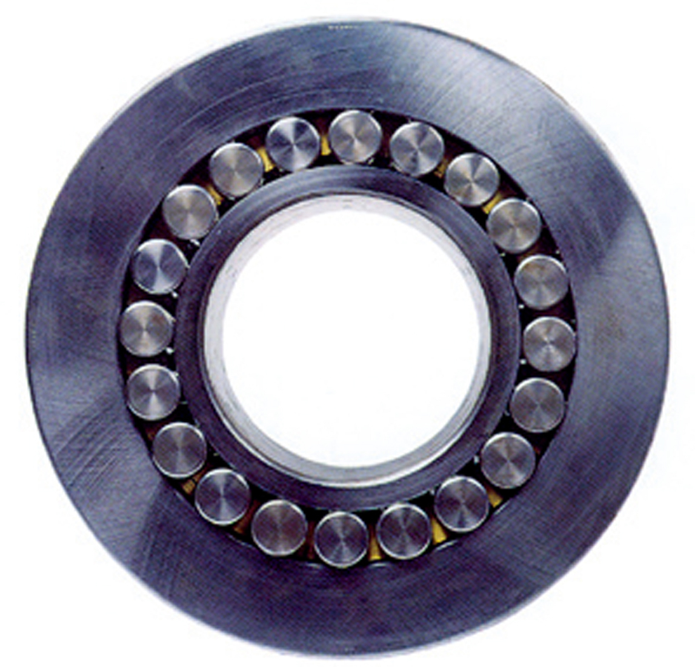
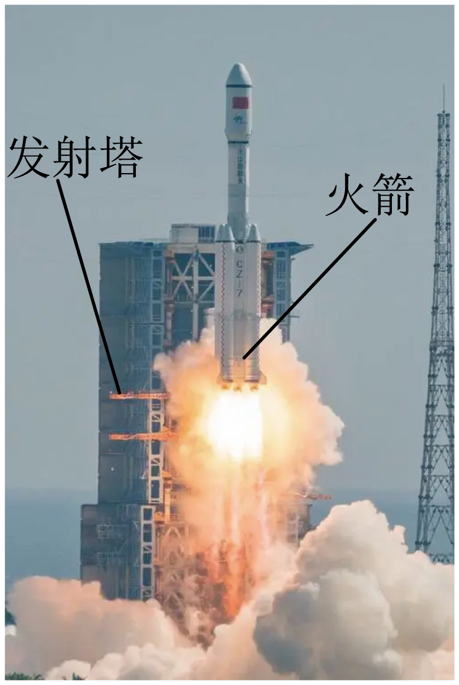

2024年北京市中考物理试题 · 选择题 第1、2、3、4、5题
1. 下列物品中，通常情况下属于导体的是（ ）
A. 陶瓷杯B. 橡皮C. 钢尺D. 塑料水瓶
2. 下图所示为自行车部件或使用中的实例，为了减小摩擦的是（ ）
A.

车把上套了有花纹的橡胶套B.

遇到紧急情况时用力捏刹车C.  自行车轮胎上刻有花纹
自行车轮胎上刻有花纹
D.

轴承中装有滚珠3. 图中所示为我国某型号的火箭发射时上升的情境。关于该发射过程，下列说法正确的是（ ）

A. 以发射塔为参照物，火箭是静止的
B. 以火箭为参照物，发射塔是静止的
C. 以地面为参照物，火箭是运动的
D. 以地面为参照物，发射塔是运动的
4. 如图所示 光现象，由于光的折射形成的是（ ）
光现象，由于光的折射形成的是（ ）
A. 故宫角楼在水中的“侧影”
B. 树在地面上的“树影”
C. 花在透镜下的“放大像”
D. 月亮在水中的“像”
5. 如图所示，园艺工人在修剪枝条时，常把枝条尽量往剪刀的轴处靠近，这样做是为了（ ）
A. 增大动力臂，能够省力
B. 增大阻力臂，方便使用
C. 减小动力臂，方便使用
D. 减小阻力臂，能够省力